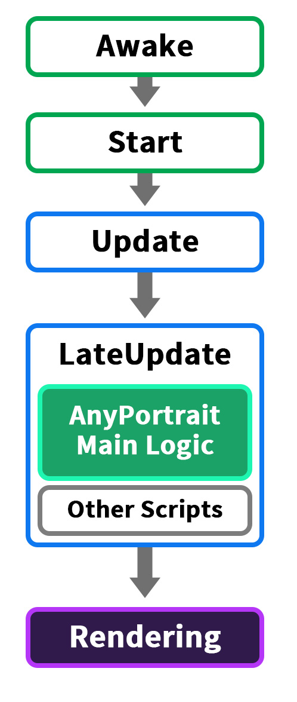

AnyPortrait > 메뉴얼 > 메인 로직 이벤트
메인 로직 이벤트
1.4.8
유니티 엔진은 업데이트와 렌더링이 정해진 순서로 처리됩니다.
MonoBehaviour 스크립트의 이벤트들이 각각의 단계를 의미합니다.
AnyPortrait는 유니티에 내장된 기능이 아니므로 "애니메이션이 처리되는 순서"에서 정확하게 업데이트되지는 않지만, 최대한 비슷한 시점에서 업데이트되도록 개발되었습니다.
(참고 : 유니티 엔진의 이벤트 실행 순서)
하지만 사용자가 작성하는 스크립트 또는 다른 에셋들의 특성에 따라서는 AnyPortrait의 업데이트 시점을 변경할 필요도 있을 것입니다.
AnyPortrait v1.4.8에서 추가된 Main Logic Event 옵션을 이용하여 애니메이션과 메시가 갱신되는 시점을 변경할 수 있습니다.
메인 로직이 호출되는 이벤트 설정

(1) Bake 다이얼로그를 엽니다.
(2) Setting 탭을 선택합니다.
(3) Main Logic Event의 값을 변경하여 메인 로직이 업데이트되는 이벤트를 설정할 수 있습니다.
옵션의 값은 각각 다음과 같습니다.
- LateUpdate : MonoBehaviour의 "LateUpdate" 이벤트에서 메인 로직이 실행됩니다. 기본값입니다.
- Update : MonoBehaviour의 "Update" 이벤트에서 메인 로직이 실행됩니다.

이 옵션은 Inspector에서도 변경할 수 있습니다.
(1) 유니티 씬에서 AnyPortrait 캐릭터를 선택합니다.
(2) 기본 설정 탭을 선택합니다.
(3) Main Logic Event 옵션을 설정할 수 있습니다.
메인 로직 호출 시점에 대해
메인 로직이 언제 호출되는지는 민감한 이슈일 수도, 또는 그렇지 않을 수도 있습니다.
게임의 각각의 모듈이 느슨한 관계를 가지고 동작한다면 이 옵션은 크게 중요하지 않을 수 있습니다.
하지만 게임의 1프레임 동안 각각의 모듈이 처리되는 순서가 중요한 경우에 스크립트가 호출되는 순서는 매우 중요해집니다.
예를 들자면, 캐릭터를 따라다니는 카메라의 업데이트 함수는 캐릭터 로직이 처리된 이후에 호출되어야 할 것입니다.
애니메이션의 경우도 마찬가지입니다.
만약 업데이트 순서가 정리되지 않은 상태라면, 애니메이션 재생 요청 등이 제대로 처리되지 않을 수 있습니다.
따라서 일반적인 스크립트의 처리 순서와 애니메이션의 처리 순서는 분명히 일관된 규칙을 가지고 정해져야 합니다.

애니메이션과 관련하여 유니티의 이벤트 호출 순서를 정리한 그림입니다.
초기화에 해당하는 Awake와 Start를 지나고, Update 이벤트가 호출됩니다.
그리고 이어서 애니메이션이 업데이트됩니다.
마지막으로 LateUpdate가 호출된 후 렌더링이 되면 하나의 사이클이 완성됩니다.
스크립트들의 업데이트와 애니메이션의 처리 단계가 분리되어있기 때문에 오류없이 동작할 수 있는 것입니다.

AnyPortrait는 유니티 내장 기능이 아니기 때문에, 해당 처리 방식을 그대로 이용할 수는 없습니다.
하지만 최대한 유니티의 애니메이션 처리 순서와 유사하게 동작하도록 위와 같이 메인 로직이 실행되도록 개발을 한 것입니다.
실제로 AnyPortrait의 메인 로직은 기본적으로 "LateUpdate"에서 처리됩니다.
사용자들이 주로 Update에 로직을 작성하기 때문에 이것은 유니티의 처리 순서와 꽤 비슷합니다.
다만 위 그림에서 보듯이, LateUpdate 내에서 다른 스크립트들과의 오류가 발생할 가능성을 가진다는 점은 이 방식의 한계입니다.
(실행 순서에 의한 문제와 해결 방법은 관련 페이지에서 확인해보세요.)
이 기본 구조는 대체로 잘 작동하지만, 스크립트 실행 순서를 정교하게 설계하여 개발하는 분들에게는 조금 더 유연한 옵션이 제공될 필요가 있을 것입니다.

Main Logic Event 옵션의 값을 "Update"로 변경했을 때의 호출 순서입니다.
AnyPortrait의 메인 로직이 다른 스크립트와 유사하게 Update에서 처리됩니다.
이 방식을 이용하면 LateUpdate에서 더 복잡한 처리들을 조금 더 쉽게 구현할 수 있을 것입니다.
애니메이션 이벤트 콜백을 빠른 타이밍에 받을 수 있는 것도 장점입니다.
하지만 Update 내에서 다른 스크립트와 호출 순서에 따른 문제를 더 많이 발생할 가능성이 높습니다.
최소한, "애니메이션 재생 요청"을 하는 스크립트는 AnyPortrait 메인 로직보다는 무조건 먼저 실행되어야 합니다.
따라서 이 방식을 이용한다면 스크립트 실행 순서를 아래의 설명을 꼭 확인해야합니다.
Update 이벤트에서 메인 로직이 실행되도록 설정하는 경우

(1) Main Logic Event의 값을 Update로 변경합니다.
(2) Project Settings을 엽니다.
(3) Script Execution Order 메뉴를 선택합니다.
(4) AnyPortrait.apPortrait가 Default Time보다 나중에 호출되도록 설정합니다. 실행되는 순서가 중요한 다른 스크립트나 에셋들이 있다면 잘 고려하여 실행 순서를 설정하셔야 합니다.